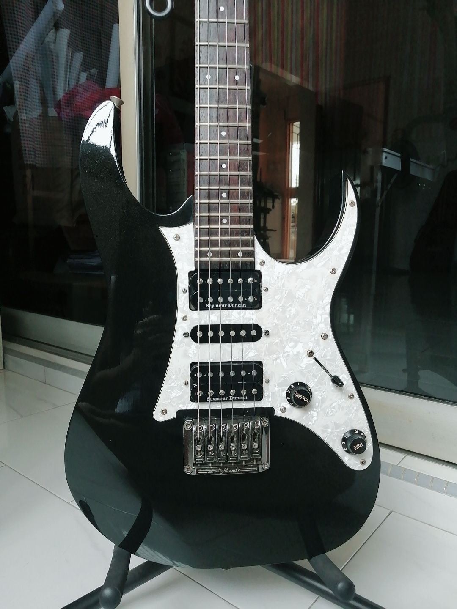

Everyone had something they wanted to be when they were small. I was no exception.
When I was small, I dreamt of being an inventor.
The ability to create new things that people will use and benefit from seemed appealing to me.
My dream was forgotten as I turned into a teenager, up until the day I decided to take Computing as an O level subject in Secondary 3.
The power to develop software through coding immediately awakened that small inventor (or developer!) I had inside of me and I gradually begun to self-learn different developing tools and languages and start small projects outside of the Python lessons I had in class.
I learnt of the huge impact and need of cyber-security specialists in Singapore which drew my attention to security, and spurred me on to study a Cyber Security Diploma in Singapore Polytechnic.
Aside from studying for my diploma, I would often find myself actively participating in Hackathons and developing games.
A 2D open-world RPG called Reigns of Fate that I'm currently developing with a friend!
I really love open-world RPGs (The Witcher 3 is my all-time favourite!), hence a small dream of mine is to develop an open-world RPG game where many people will play and appreciate.
A 2D open-world RPG called Reigns of Fate that I'm currently developing with a friend!
Just like the ever-changing landscape in IT, I strive to learn new skills and develop new creations and solutions to better our everyday lives through the power of technology.
However, life is also much more interesting than living in front of a computer.
My passion for IT might be great, but my love for music and art is greater.
Since joining the Symphonic Band in secondary school, music has become an irreplacable part of my life.
I really love rock music and JROCK, so much that I bought my first electric guitar and amp in Secondary 4 and started learning how to play it.
Gradually, I bought more and more different types of guitars to experience different types of playing styles and music genres.
I also got my own electronic drumset to start learning how to play the drums too!
One day, I dream of starting my own band and cover JROCK songs that I love.
My beloved Ibanez RG 1451 Prestige - a rare Ibanez guitar with a fixed bridge!
It is fit with seymour duncan pickups and is my favourite among my few guitars in terms of sound and playability!
Me playing on my acoustic guitar!
My beloved Ibanez RG 1451 Prestige - a rare Ibanez guitar with a fixed bridge!
It is fit with seymour duncan pickups and is my favourite among my few guitars in terms of sound and playability!
Besides playing my instruments, I also spend a large amount of time in front of an empty piece of paper drawing.
I wouldn't say my drawing skills are anywhere near something I would be proud of, but I am surely working hard for that day to arrive.
One day, I will reach it and be able to produce sprites and illustrations for the games I am working on!